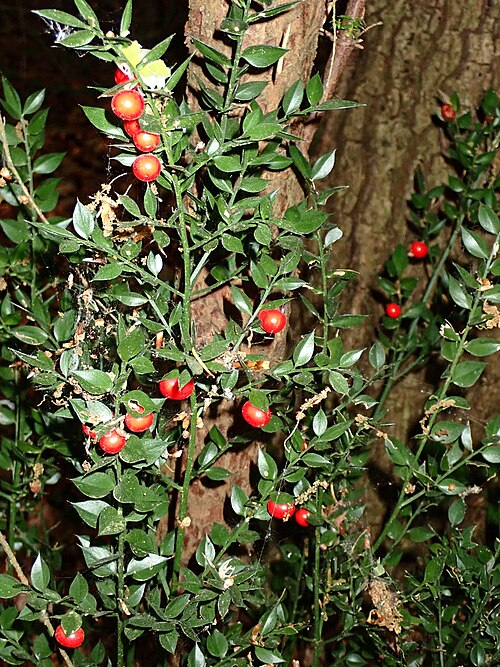
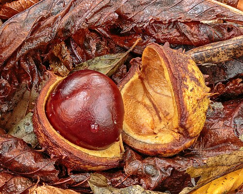
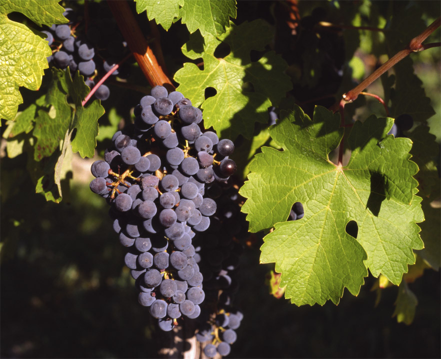

33 g
Flebocare
For venous circulation and microcirculation
MicrocirculationVenous functionVascular protection
FLEBOCARE is a supplement developed to support the physiological function of venous circulation and microcirculation, contributing to the wellbeing of the legs and to maintaining the integrity of the vascular wall. It works through the synergistic action of micronised diosmin, butcher's broom, horse chestnut and red vine.
What it supports
- Supports microcirculation function
- Supports physiological venous circulation
- Contributes to the wellbeing of the haemorrhoidal plexus
- Counters the feeling of heaviness in the legs
- Supports the regular function of the cardiovascular system
- Contributes to protecting cells from oxidative stress thanks to the polyphenols of red vine
The proper working of microcirculation and venous circulation is fundamental to the wellbeing of the legs and to the physiological drainage of fluids.
Key ingredients
Micronised diosmin
A natural flavonoid obtained from citrus fruit, it is one of the most studied actives in the nutraceutical support of venous function. Micronisation improves particle dispersion, favouring bioavailability. It is the cornerstone of the formulation thanks to the extensive scientific documentation available.

Butcher's broom (Ruscus aculeatus)
Traditionally used to support the function of venous circulation. It contributes to microcirculation function (heaviness in the legs) and to venous circulation function, supporting the wellbeing of the haemorrhoidal plexus.

Horse chestnut (Aesculus hippocastanum)
A natural source of aescin, it is used to support the physiological function of microcirculation and to complete the support given to the venous system.

Red vine (Vitis vinifera)
Rich in polyphenols and proanthocyanidins, it contributes to microcirculation function and to the regular function of the cardiovascular system, and exerts a significant antioxidant activity.
Why this combination?
A formulation built on synergy
FLEBOCARE comes from a pairing of ingredients selected to act in complementary ways on the wellbeing of the veno-lymphatic system.
- Micronised diosminthe cornerstone of the formulation, widely studied for supporting venous function
- Butcher's broomsupport for venous circulation, microcirculation and the wellbeing of the haemorrhoidal plexus
- Horse chestnutsupport for microcirculation function
- Red vineantioxidant protection and support for microcirculation and the cardiovascular system
The formulation was developed by pharmacists with an approach based on synergy between the actives, favouring assayed and standardised extracts, selected raw materials and ingredients backed by the scientific literature.
Typical content
| Component | Amount |
|---|---|
| Micronised diosmin | 450 mg |
| Butcher's broom d.e. | 100 mg |
| of which ruscogenins | 10 mg |
| Horse chestnut d.e. | 100 mg |
| of which aescin | 20 mg |
| Red vine d.e. | 100 mg |
| of which polyphenols | 30 mg |
Typical content per daily dose (1 tablet).
How to use
One tablet a day with a glass of water.
Label information ingredients · warnings · storage
Ingredients
Micronised diosmin; Butcher's broom (Ruscus aculeatus L.) rhizome d.e.; Horse chestnut (Aesculus hippocastanum L.) seed d.e. assayed for aescin; Red vine (Vitis vinifera L.) leaf d.e. assayed for polyphenols; Anti-caking agents: fatty acids, magnesium salts of fatty acids, silicon dioxide. Gluten free · Lactose free · Suitable for vegetarians and vegans.
Warnings
Do not exceed the recommended daily dose. Keep out of reach of children under 3 years of age. Food supplements are not intended as a substitute for a varied, balanced diet and a healthy lifestyle. During pregnancy and breastfeeding, seek the advice of your pharmacist or doctor. In caso di terapie farmacologiche in corso, in particolare con anticoagulanti, consultare il medico.
Storage
Store tightly closed in a cool, dry place, away from direct sunlight and heat sources. The expiry date refers to the product correctly stored in an intact pack.
The other Stilo Lab formulas